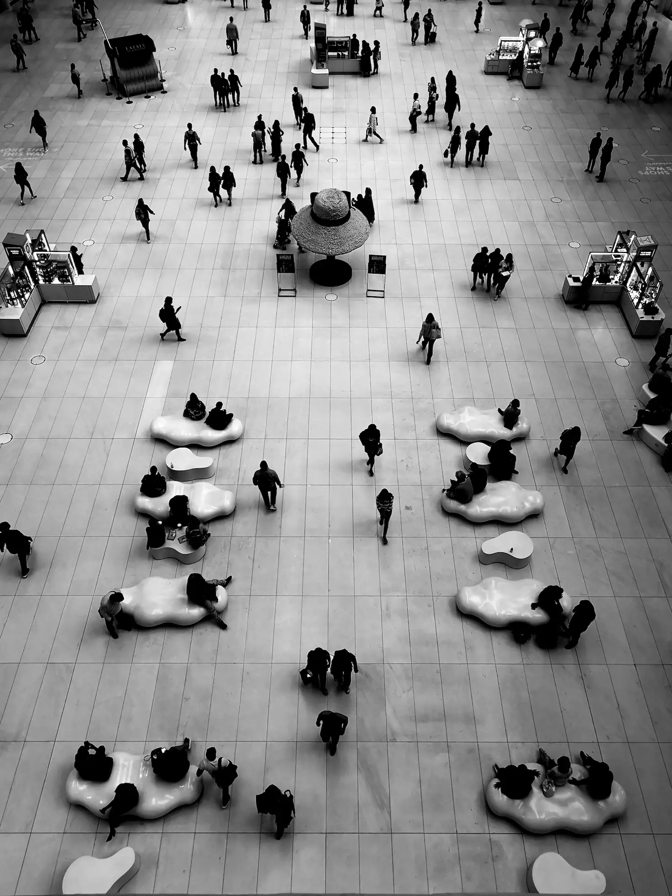

01 — Portfolio
Arquitectura
como narrativa.
Fotografía · Arquitectura · Espacio urbano
María Rodríguez / Barcelona
Observo la arquitectura como una composición de luz, silencio, geometría y espacio.
Arquitectura
Geometría, materia y luz.
Espacio Urbano
Fragmentos de ciudad y arquitectura cotidiana.
Ataraxia
Un estudio sobre silencio, forma y vacío.
Minimal Project
Ataraxia


Sobre
mí.
La arquitectura también puede leerse como una imagen.
Arquitecta con enfoque en la narrativa visual y el espacio urbano. Mi trabajo explora la relación entre estructura, luz, geometría y forma.
Especializada en documentación de obra y proyectos de paisaje, entiendo la arquitectura como un lenguaje que también puede narrarse a través del encuadre.
Contacto